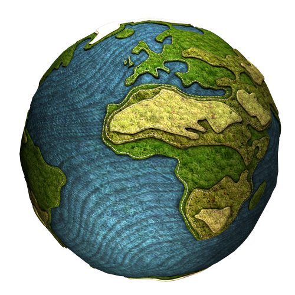
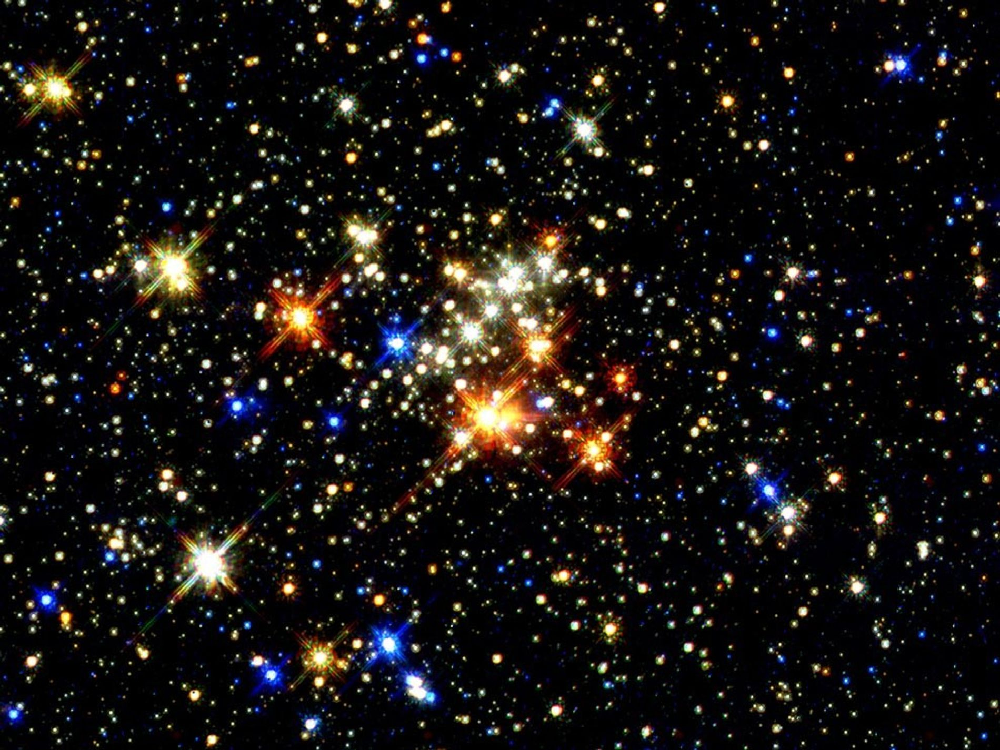

WEB ESPACIAL
Historia del universo
La teoría más conocida sobre el origen del universo se centra en un cataclismo cósmico sin igual en la historia: el Big Bang. Esta teoría surgió de la observación del alejamiento a gran velocidad de otras galaxias respecto a la nuestra en todas direcciones, como si hubieran sido repelidas por una antigua fuerza explosiva. Con el exitoso lanzamiento y despliegue del telescopio espacial James Webb la comunidad científica pretenden obtener más datos sobre el origen del universo. Con esta nueva herramienta en el espacio, los astrónomos pretenden buscar en el universo, tanto en el espacio como en el tiempo, cosas nunca vistas antes. Y en 2023, estas observaciones ya han dado sus frutos y permitido a los científicos saber más sobre el pasado del universo.
Astronautas destacados
Yuri Gagaran
Su travesía hacia el espacio comenzó cerca de las 07:30 horas, un 12 de abril de 1961, desde el cosmódromo de Baikonur, en Zakajstán. Tras la misión espacial estudió en la Academia de la Fuerza Aérea de Zhukovski, y se graduó como ingeniera espacial en 1969.

Neil Armstrong
A sus 39 años, Armstrong fue el primer hombre que puso e imprimió sus huellas en la superficie lunar, y permaneció 2 horas y 14 minutos fuera del módulo de alunizaje “Eagle”. El alunizaje había tenido lugar un día antes (20 de julio) en la región lunar conocida como “Mar de la Tranquilidad”.

Valentina Tereshkova
Nacida el 6 de marzo de 1937. Primera mujer de la historia en viajar al espacio, a bordo del Vostok 6 en 1963. Efectuó 48 órbitas alrededor de la Tierra en el satisfactorio vuelo del Vostok 6, que duró del 16 al 19 de junio de 1963.

Origen de las estrellas
Las estrellas se forman a partir de nubes moleculares: regiones poco densas del espacio que consisten principalmente en hidrógeno, helio y otros elementos más pesados. Al colapsar se forma un "Glóbulo de Bok": una nebulosa oscura de gas, que de continuar densificándose da inicio a la generación de temperatura, formando así un núcleo de protoestrella. Así surgen las estrellas jóvenes, que pueden reconocerse al emitir un chorro de gas sobre su eje de rotación. Las estrellas están formadas en su mayor parte por los elementos más simples del universo: hidrógeno (71%) y helio (27%), con un pequeño porcentaje (2%) de elementos más pesados.
